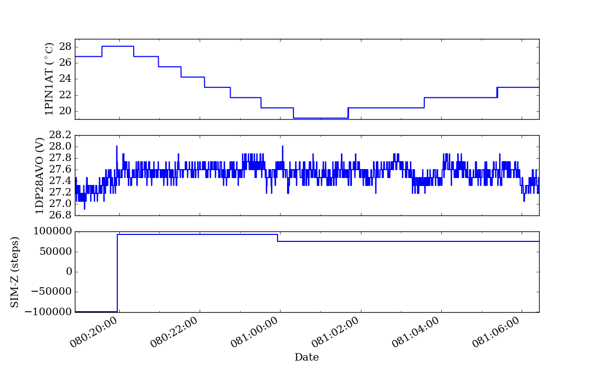
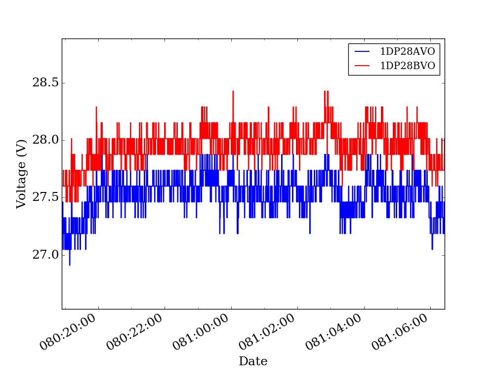
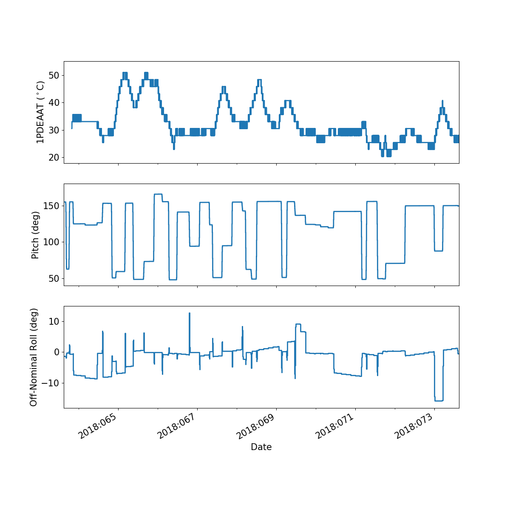
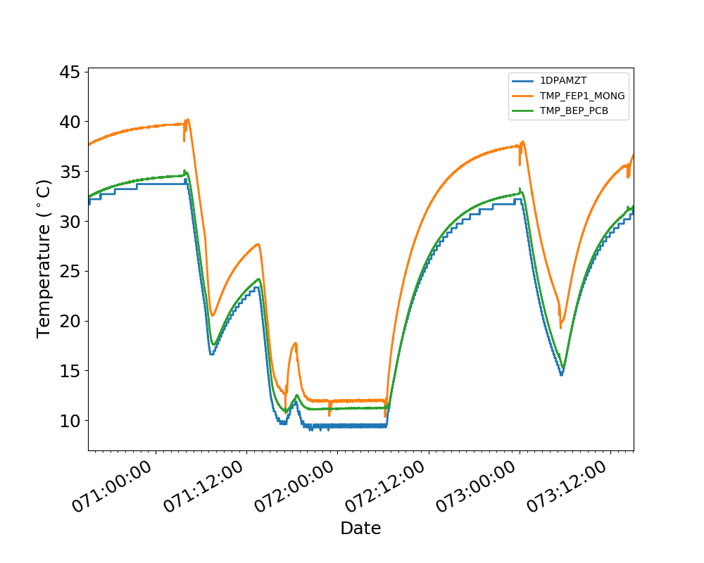
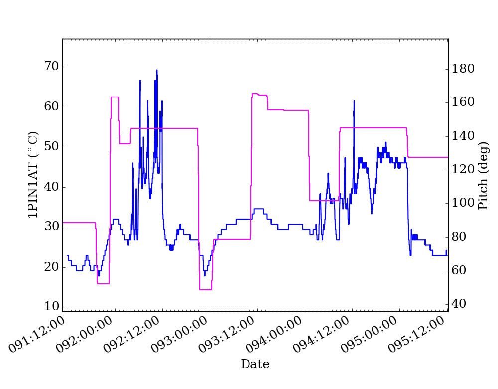
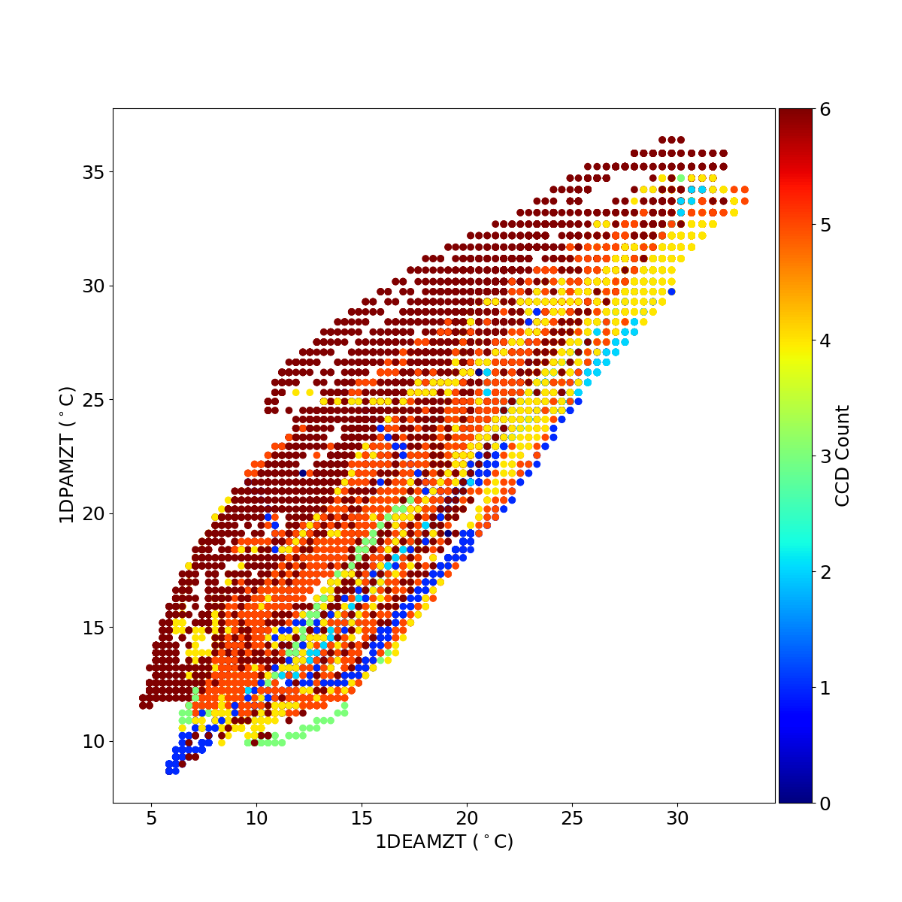
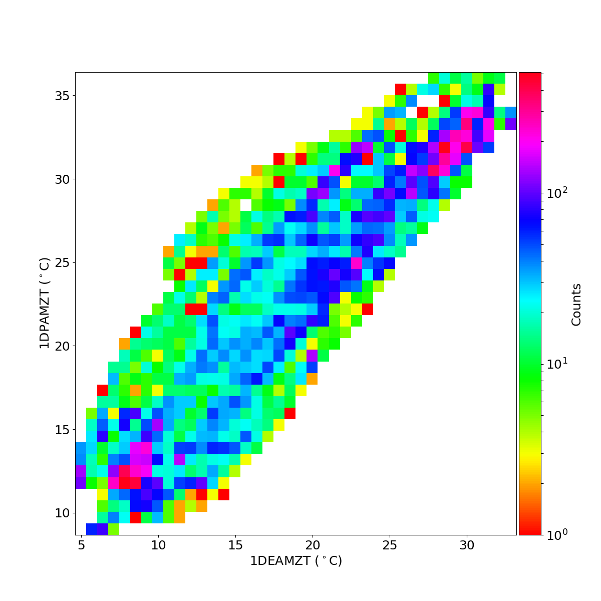

ACISpy Command Line Tools¶
For making quick plots and getting quick summaries of important information, the following ACISpy-based command-line utilities are provided. For finer-grained control over plots and data, it is recommended to use the ACISpy Python interface.
multiplot_archive¶
usage: multiplot_archive [-h] [--one-panel] [--maude] tstart tstop plots
Make plots of MSIDs and commanded states from the engineering archive
positional arguments:
tstart The start time in YYYY:DOY:HH:MM:SS format
tstop The stop time in YYYY:DOY:HH:MM:SS format
plots The MSIDs and states to plot, comma-separated
optional arguments:
-h, --help show this help message and exit
--one-panel Whether to make a multi-panel plot or a single-panel plot. The
latter is only valid if the quantities have the same units.
--maude Use MAUDE to get telemetry data.
Example 2¶
[~]$ multiplot_archive 2016:091 2016:097 1pdeaat,1pdeabt,1pin1at --one-panel
multiplot_tracelog¶
usage: multiplot_tracelog [-h] [--one-panel] tracelog plots
Make plots of MSIDs from a tracelog file. Commanded states will be loaded from
the commanded states database.
positional arguments:
tracelog The tracelog file to load the MSIDs from
plots The MSIDs and states to plot, comma-separated
optional arguments:
-h, --help show this help message and exit
--one-panel Whether to make a multi-panel plot or a single-panel plot. The
latter is only valid if the quantities have the same units.
Example 1¶
[~]$ multiplot_tracelog acisENG10d_00985114479.70.tl 1pin1at,1dp28avo,simpos
Returns:
Example 2¶
[~]$ multiplot_tracelog acisENG10d_00985114479.70.tl 1dp28avo,1dp28bvo --one-panel
Returns:
plot_10day_tl¶
usage: plot_10day_tl [-h] [--days DAYS] [--one-panel] fields
Plot one or more MSIDs or states from the ACIS 10-day tracelog files.
positional arguments:
fields The MSIDs and states to plot, comma-separated
optional arguments:
-h, --help show this help message and exit
--days DAYS The number of days before the end of the log to plot. Default:
10
--one-panel Whether to make a multi-panel plot or a single-panel plot. The
latter is only valid if the quantities have the same units.
Example 1¶
Plot one MSID and two states in three different panels.
[~]$ plot_10day_tl 1pdeaat,pitch,off_nom_roll
Returns:
Example 2¶
Plot 3 MSIDs from ove the past three days and combine them in one panel.
[~]$ plot_10day_tl 1dpamzt,tmp_fep1_mong,tmp_bep_pcb --days 3 --one-panel
Returns:
plot_model¶
usage: plot_model [-h] [--y2_axis Y2_AXIS] load y_axis
Plot a single model component with another component or state
positional arguments:
load The load to take the model from
y_axis The model component to plot on the left y-axis
optional arguments:
-h, --help show this help message and exit
--y2_axis Y2_AXIS The model component or state to plot on the right y-axis
(default: none)
plot_msid¶
usage: plot_msid [-h] [--y2_axis Y2_AXIS] [--maude] tstart tstop y_axis
Plot a single MSID with another MSID or state
positional arguments:
tstart The start time in YYYY:DOY:HH:MM:SS format
tstop The stop time in YYYY:DOY:HH:MM:SS format
y_axis The MSID to be plotted on the left y-axis
optional arguments:
-h, --help show this help message and exit
--y2_axis Y2_AXIS The MSID or state to be plotted on the right y-axis
(default: none)
--maude Use MAUDE to get telemetry data.
Example¶
Plot 1PIN1AT and pitch.
[~]$ plot_msid 2016:091 2016:095 1pin1at --y2_axis=pitch
Returns:
simulate_ecs_run¶
usage: simulate_ecs_run [-h] [--vehicle_load VEHICLE_LOAD] [--simpos SIMPOS]
[--off_nom_roll OFF_NOM_ROLL] [--dh_heater DH_HEATER]
[--fep_count FEP_COUNT] [--clocking CLOCKING]
[--instrument INSTRUMENT] [--q Q]
component tstart hours T_init pitch ccd_count
Simulate an ECS run.
positional arguments:
component The component to model: dpa, dea, or psmc.
tstart The start time of the ECS run in YYYY:DOY:HH:MM:SS
format
hours The length of the ECS run in hours.
T_init The initial temperature of the component in degrees C.
pitch The pitch in degrees.
ccd_count The number of CCDs to clock.
optional arguments:
-h, --help show this help message and exit
--vehicle_load VEHICLE_LOAD
The vehicle load which is running. Default: None,
meaning no vehicle load. If this parameter is set, the
input values of pitch and off-nominal roll will be
ignored and the values from the vehicle load will be
used.
--simpos SIMPOS The SIM position. Default: -99616.0
--off_nom_roll OFF_NOM_ROLL
The off-nominal roll. Default: 0.0
--dh_heater DH_HEATER
Is the DH heater on (1) or off (0)? Default: 0/off.
--fep_count FEP_COUNT
The number of FEPs which are on.
--clocking CLOCKING Whether or not the CCDs are being clocked.
--instrument INSTRUMENT
The instrument which is being used, only for the FP
temperature.
--q Q Target quaternion in the case of the FP temperature.
Example 1¶
To run the 1DPAMZT model with the following conditions:
Start time: 2015:100:12:45:30
Length of ECS run: 24 hours
Initial temperature: 10.0 degrees C
Pitch: 150 degrees
CCD count: 6
Off-nominal roll: 12.0 degrees
[~]$ simulate_ecs_run dpa 2015:100:12:45:30 24 10.0 150. 6 --off_nom_roll 12.0
Returns:
acispy: [INFO ] 2020-07-15 14:25:22,895 Run Parameters
acispy: [INFO ] 2020-07-15 14:25:22,895 --------------
acispy: [INFO ] 2020-07-15 14:25:22,895 Start Datestring: 2015:100:12:45:30.000
acispy: [INFO ] 2020-07-15 14:25:22,895 Length of ECS run in hours: 24.0
acispy: [INFO ] 2020-07-15 14:25:22,895 Stop Datestring: 2015:101:15:32:22.000
acispy: [INFO ] 2020-07-15 14:25:22,895 Initial Temperature: 10 degrees C
acispy: [INFO ] 2020-07-15 14:25:22,895 CCD Count: 6
acispy: [INFO ] 2020-07-15 14:25:22,895 FEP Count: 6
acispy: [INFO ] 2020-07-15 14:25:22,895 Pitch: 150.0
acispy: [INFO ] 2020-07-15 14:25:22,895 SIM Position: -99616
acispy: [INFO ] 2020-07-15 14:25:22,896 Off-nominal Roll: 12.0
acispy: [INFO ] 2020-07-15 14:25:22,896 Detector Housing Heater: OFF
acispy: [INFO ] 2020-07-15 14:25:22,896 Model Result
acispy: [INFO ] 2020-07-15 14:25:22,896 ------------
acispy: [INFO ] 2020-07-15 14:25:22,896 The limit of 37.5 degrees C will be reached at 2015:100:20:23:20.816, after 27.4708 ksec.
acispy: [INFO ] 2020-07-15 14:25:22,896 The limit is reached before the end of the observation.
acispy: [WARNING ] 2020-07-15 14:25:22,896 This observation is NOT safe from a thermal perspective.
acispy: [INFO ] 2020-07-15 14:25:23,729 Image of the model run has been written to ecs_run_dpa_6chip_2015:100:12:45:30.png.
Example 2¶
To run the 1DEAMZT model with the following conditions:
Start time: 2017:069:15:40:00
Length of ECS run: 24 hours
Initial temperature: 7.5 degrees C
Pitch: 150 degrees
CCD count: 4
Off-nominal roll: 0.0 degrees
[~]$ simulate_ecs_run dea 2017:069:15:40:00 24 7.5 150. 4 --off_nom_roll 0.0
Returns:
acispy: [INFO ] 2020-07-15 14:33:20,718 Run Parameters
acispy: [INFO ] 2020-07-15 14:33:20,718 --------------
acispy: [INFO ] 2020-07-15 14:33:20,718 Start Datestring: 2017:069:15:40:00.000
acispy: [INFO ] 2020-07-15 14:33:20,718 Length of ECS run in hours: 24.0
acispy: [INFO ] 2020-07-15 14:33:20,718 Stop Datestring: 2017:070:18:26:52.000
acispy: [INFO ] 2020-07-15 14:33:20,718 Initial Temperature: 7.5 degrees C
acispy: [INFO ] 2020-07-15 14:33:20,718 CCD Count: 4
acispy: [INFO ] 2020-07-15 14:33:20,719 FEP Count: 4
acispy: [INFO ] 2020-07-15 14:33:20,719 Pitch: 150.0
acispy: [INFO ] 2020-07-15 14:33:20,719 SIM Position: -99616
acispy: [INFO ] 2020-07-15 14:33:20,719 Off-nominal Roll: 0.0
acispy: [INFO ] 2020-07-15 14:33:20,719 Detector Housing Heater: OFF
acispy: [INFO ] 2020-07-15 14:33:20,719 Model Result
acispy: [INFO ] 2020-07-15 14:33:20,719 ------------
acispy: [INFO ] 2020-07-15 14:33:20,719 The limit of 36.5 degrees C is never reached.
acispy: [INFO ] 2020-07-15 14:33:20,719 This observation is safe from a thermal perspective.
acispy: [INFO ] 2020-07-15 14:33:21,547 Image of the model run has been written to ecs_run_dea_4chip_2017:069:15:40:00.png.
Example 3¶
This example assumes that the vehicle loads are still running, which means that the input values of the pitch and the off-nominal roll are ignored in favor of
To run the 1DPAMZT model with the following conditions:
Start time: 2017:256:03:20:00
Length of ECS run: 24 hours
Initial temperature: 10.0 degrees C
Pitch: 0 degrees (the value doesn’t matter)
CCD count: 6
Vehicle load: SEP0917C
[~]$ simulate_ecs_run dpa 2017:256:03:20:00 24 10.0 0.0 6 --vehicle_load SEP0917C
Returns:
acispy: [INFO ] 2020-07-15 14:34:38,946 Modeling a 6-chip observation concurrent with the SEP0917C vehicle loads.
acispy: [INFO ] 2020-07-15 14:34:40,801 Run Parameters
acispy: [INFO ] 2020-07-15 14:34:40,801 --------------
acispy: [INFO ] 2020-07-15 14:34:40,801 Start Datestring: 2017:256:03:20:00.000
acispy: [INFO ] 2020-07-15 14:34:40,801 Length of ECS run in hours: 24.0
acispy: [INFO ] 2020-07-15 14:34:40,801 Stop Datestring: 2017:257:06:06:52.000
acispy: [INFO ] 2020-07-15 14:34:40,802 Initial Temperature: 10 degrees C
acispy: [INFO ] 2020-07-15 14:34:40,802 CCD Count: 6
acispy: [INFO ] 2020-07-15 14:34:40,802 FEP Count: 6
acispy: [INFO ] 2020-07-15 14:34:40,802 Pitch: Min: 46.56, Max: 156
acispy: [INFO ] 2020-07-15 14:34:40,802 SIM Position: -99616
acispy: [INFO ] 2020-07-15 14:34:40,802 Off-nominal Roll: Min: -12.5116, Max: 13.7689
acispy: [INFO ] 2020-07-15 14:34:40,802 Detector Housing Heater: OFF
acispy: [INFO ] 2020-07-15 14:34:40,802 Model Result
acispy: [INFO ] 2020-07-15 14:34:40,802 ------------
acispy: [INFO ] 2020-07-15 14:34:40,803 The limit of 37.5 degrees C will be reached at 2017:256:11:06:54.816, after 28.0148 ksec.
acispy: [INFO ] 2020-07-15 14:34:40,803 The limit is reached before the end of the observation.
acispy: [WARNING ] 2020-07-15 14:34:40,803 This observation is NOT safe from a thermal perspective.
acispy: [INFO ] 2020-07-15 14:34:41,808 Image of the model run has been written to ecs_run_dpa_6chip_2017:256:03:20:00.png.
phase_scatter_plot¶
usage: phase_scatter_plot [-h] [--c_field C_FIELD] [--cmap CMAP] [--maude]
tstart tstop x_field y_field
Make a phase scatter plot of one MSID or state versus another within a certain
time frame.
positional arguments:
tstart The start time in YYYY:DOY:HH:MM:SS format
tstop The stop time in YYYY:DOY:HH:MM:SS format
x_field The MSID or state to plot on the x-axis
y_field The MSID or state to plot on the y-axis
optional arguments:
-h, --help show this help message and exit
--c_field C_FIELD The MSID or state to plot using colors
--cmap CMAP The colormap to use if plotting colors
--maude Use MAUDE to get telemetry data.
Example 2¶
[~]$ phase_scatter_plot 2017:100 2017:200 1deamzt 1dpamzt --c_field ccd_count --cmap=jet
Returns:
phase_histogram_plot¶
usage: phase_histogram_plot [-h] [--scale SCALE] [--cmap CMAP] [--maude]
tstart tstop x_field y_field x_bins y_bins
Make a phase plot of one MSID or state versus another within a certain time
frame.
positional arguments:
tstart The start time in YYYY:DOY:HH:MM:SS format
tstop The stop time in YYYY:DOY:HH:MM:SS format
x_field The MSID or state to plot on the x-axis
y_field The MSID or state to plot on the y-axis
x_bins The number of bins on the x-axis
y_bins The number of bins on the y-axis
optional arguments:
-h, --help show this help message and exit
--scale SCALE Use linear or log scaling for the histogram, default 'linear'
--cmap CMAP The colormap for the histogram, default 'hot'
--maude Use MAUDE to get telemetry data.
Example¶
[~]$ phase_histogram_plot 2017:100 2017:200 1deamzt 1dpamzt 40 40 --scale=log --cmap=hsv
Returns:
